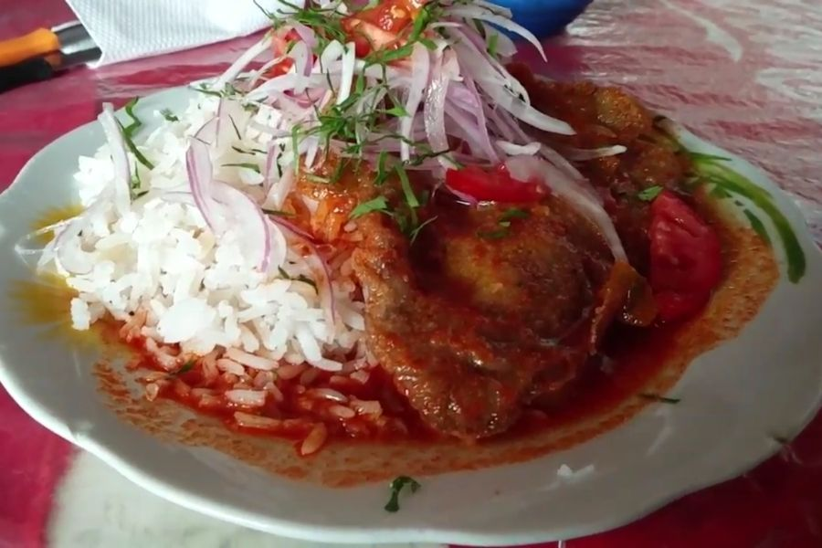
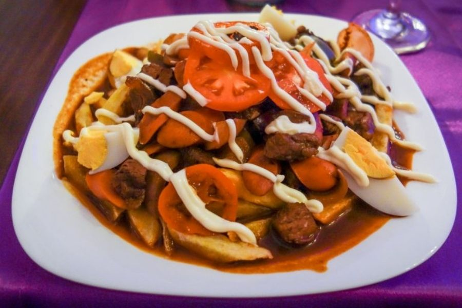

Salteñas bolivianas
Las empanadas salteñas son típicas de la provincia argentina de Salta, que limita por el norte con Bolivia. Los bolivianos tienen su propia versión de salteñas con jugosos rellenos de ternera, pollo y otras carnes.

Falso conejo
Falso conejo es un plato típico de la gastronomía de Bolivia, popular en la región de los Valles del departamento de Cochabamba y el departamento de Chuquisaca.

Pique macho
El pique macho o pique a lo macho es un plato típico de Bolivia. Consiste en trozos de carne de vaca y patatas fritas. También se le añade cebolla, locoto, huevos duros, queso cortado, mostaza, mayonesa y kétchup.